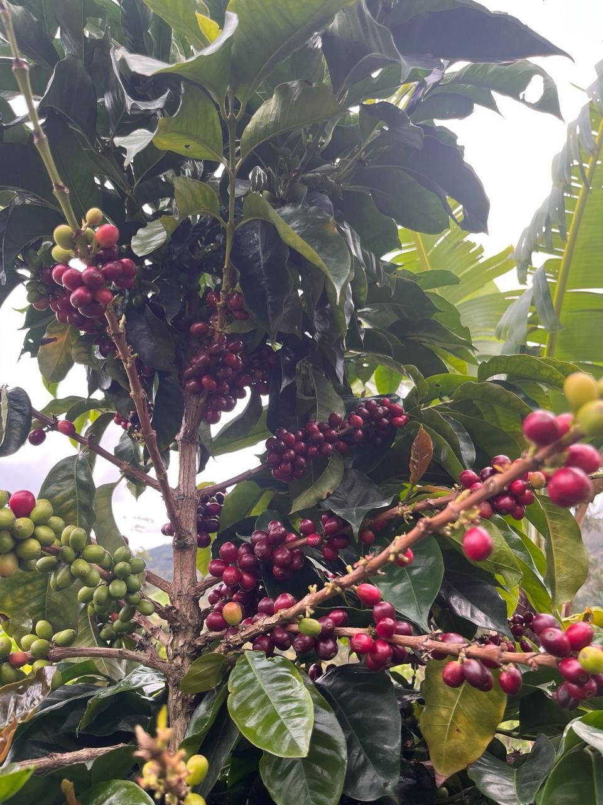
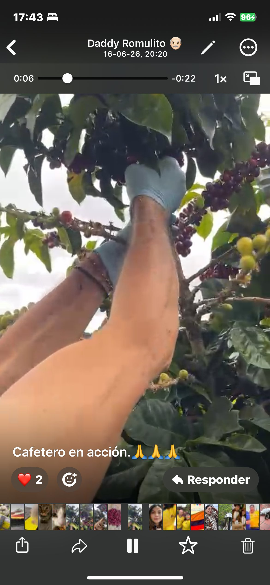
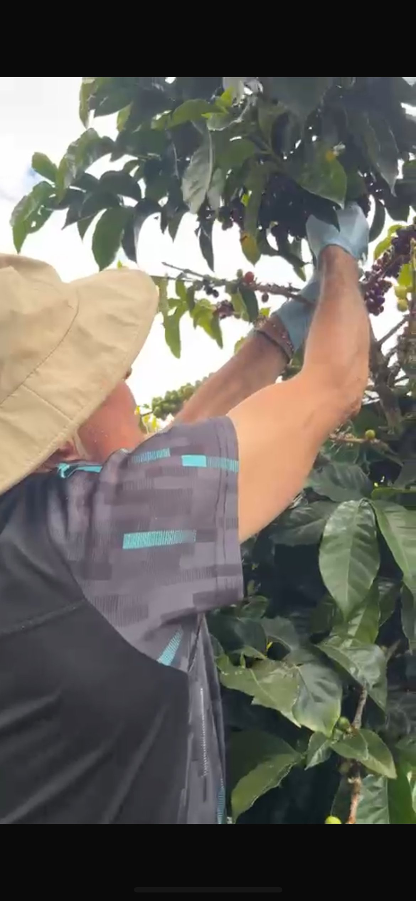
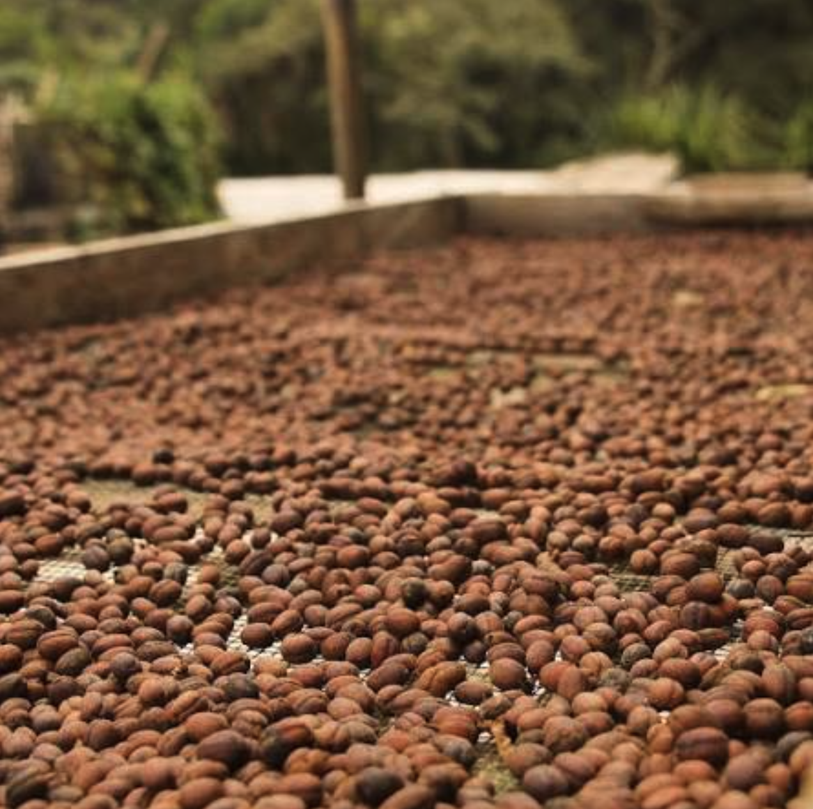
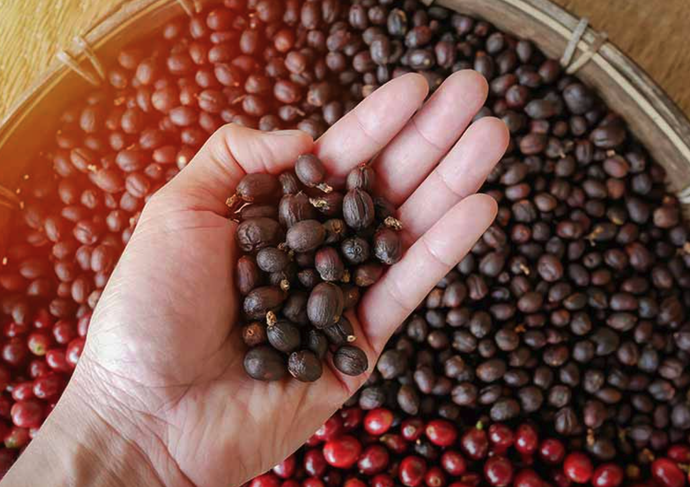
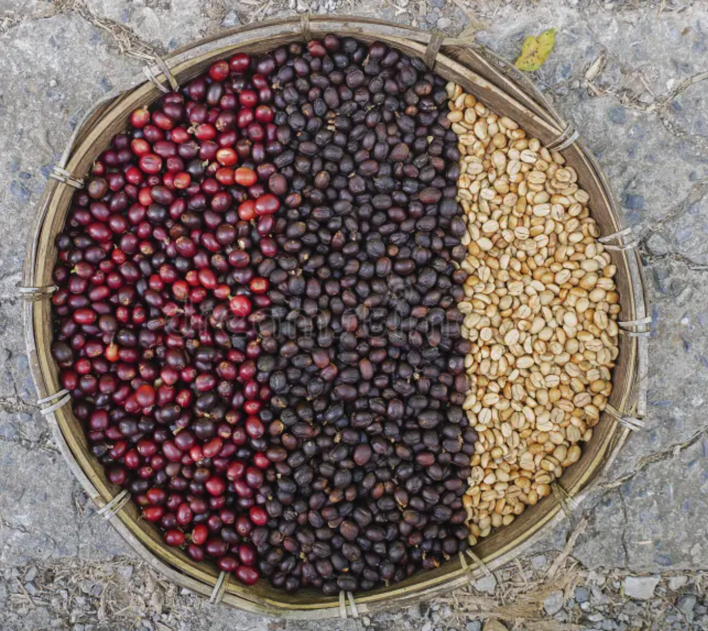
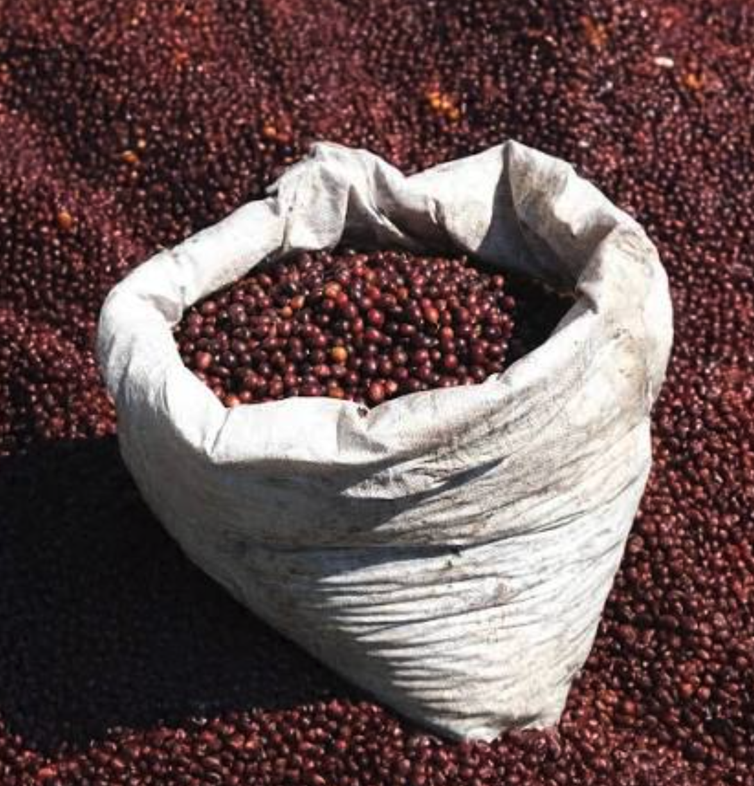
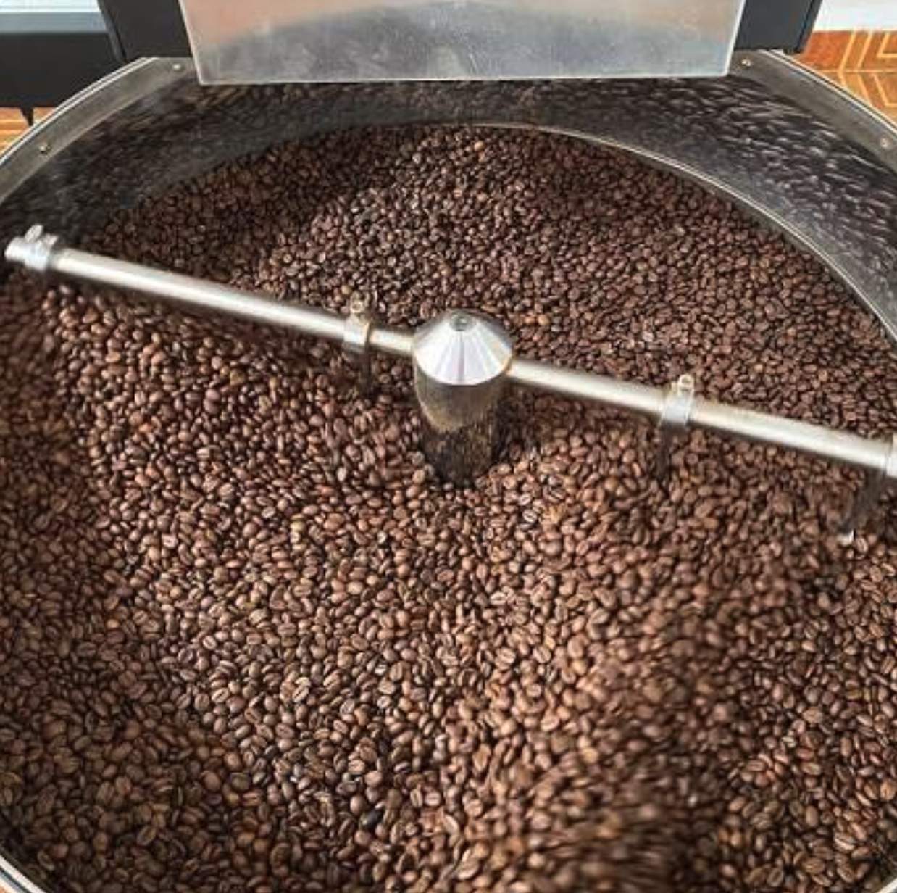
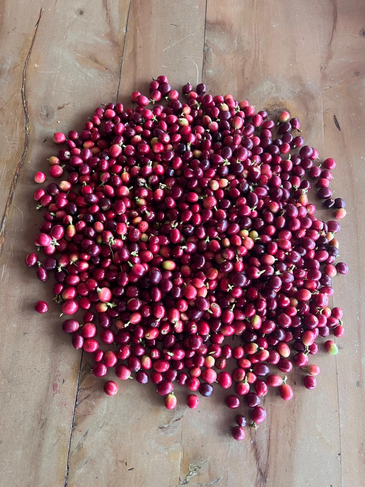
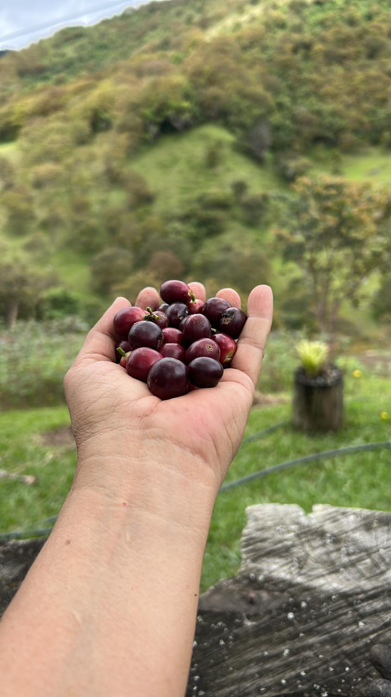

// GALERÍA
Así es la finca
Fotos reales de Finca El Sarmiento, Chinácota, Vereda Iscalá.










Café 100% colombiano cultivado y procesado artesanalmente en Chinácota, Vereda Iscalá, Norte de Santander. Producción de micro-lote con trazabilidad completa.
Cada etapa del beneficio del café se hace en la finca, con control de calidad en cada paso. De la recolección selectiva al empaque final.
Solo cerezas en su punto exacto de maduración. Recolección manual, grano por grano.
Despulpado, fermentación controlada y lavado. El secreto de un perfil de taza limpio y dulce.
Marquesina con control de humedad. El sol de Chinácota seca el grano en 5–7 días. Nada de secadoras mecánicas.
Tueste en micro-lotes. Control manual de tiempo y temperatura. Cada lote recibe atención personalizada.
Recolección manual de cerezas rojas → clasificación por flotación → despulpado → fermentación controlada 18–24h → lavado con agua limpia.
Café pergamino extendido en marquesina. Movimiento cada 30–45 minutos. Control diario de humedad hasta alcanzar 10–12% exacto.
Trillado para remover el pergamino → clasificación por tamaño con zarandas → selección manual de defectos. Solo granos perfectos pasan.
Tueste en micro-lotes de 1–3 kg → enfriamiento rápido → empaque en bolsa con válvula desgasificadora. Café fresco, siempre.
Desde qué lote del cultivo, qué día se recolectó, cómo se fermentó y quién lo tostó. Trazabilidad que el café industrial nunca tendrá.
Así controlamos cada paso desde que la cereza sale del árbol hasta que el café llega a tu taza.
Micro-lotes de 10–15 kg. Cada bolsa representa un lote específico con su propia historia de proceso.

Grano entero tostado. Máxima frescura. Para quienes muelen justo antes de preparar. Conserva el aroma hasta 4 semanas.
Molido bajo pedido según tu método: prensa francesa, V60, chemex, espresso. Empacado inmediatamente después de moler.
Tres lotes distintos en una caja. Perfecto para comparar perfiles de tueste y descubrir tu favorito. Incluye guía de cata.
Finca El Sarmiento se encuentra en la vereda Iscalá del municipio de Chinácota, una región con condiciones ideales para el café de especialidad: altura, clima y tradición cafetera.
Fotos reales de Finca El Sarmiento, Chinácota, Vereda Iscalá.









Cada taza de café El Sarmiento lleva el sol de Chinácota, el trabajo de nuestras manos y la tradición del café colombiano.
Escríbenos para pedidos, visitas a la finca o cualquier consulta.
Chinácota, Vereda Iscalá · Norte de Santander
Pedidos · Visitas · Información